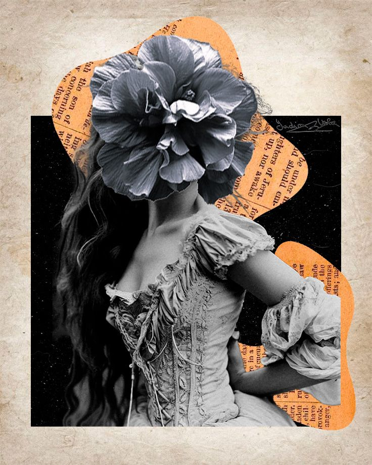

Proyectos realizados
Diseño de una floristería responsiva
Rediseño web de una pastelería responsiva

Diseño vectorial en Adobe Illustrator
Diseño de identidad visual para marca de cosmética ecológica
Prototipo visual de aplicación móvil de sushi
